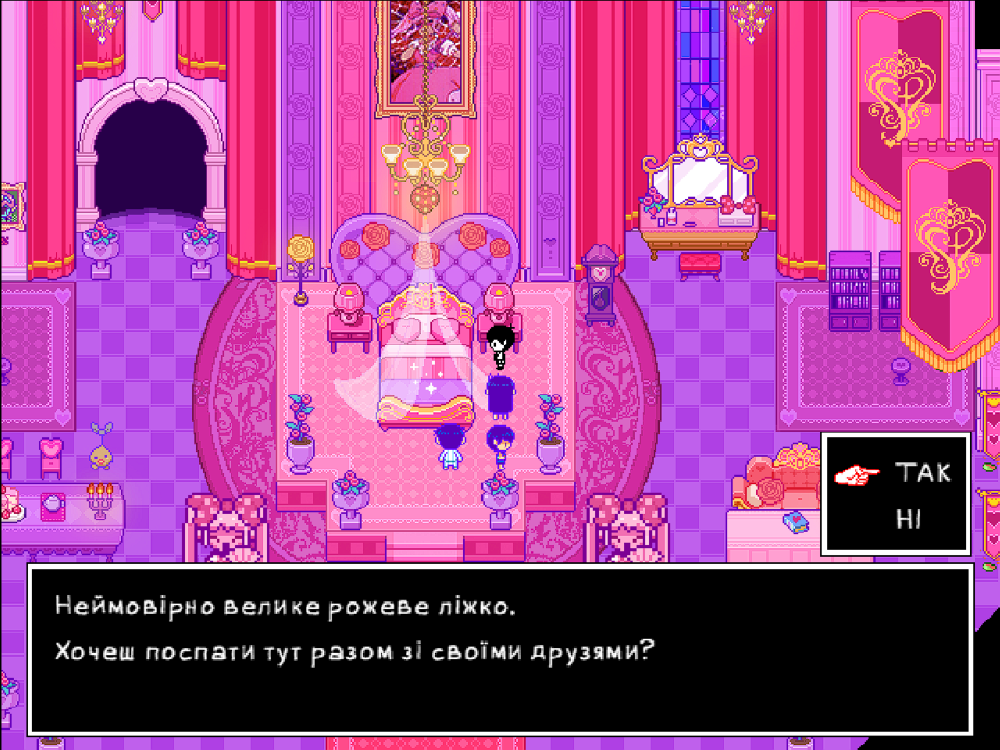
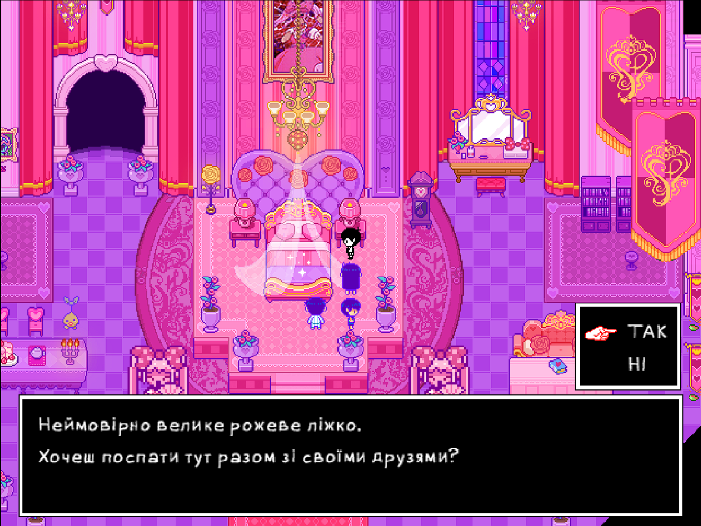

Локалізовано
100%
Натисніть для деталей
Українська локалізація
Повний переклад гри українською мовою з адаптацією графіки та власними шрифтами
 



Весь діалог та текст в грі українською
Кожне зображення перекладено та відредаговано
Створено унікальні шрифти для української мови
Всі ігрові механіки працюють українською
Змонтовано кінцівки та кат-сцени
Адаптовано імена всіх персонажів та ворогів
Натисніть для деталей
LB Launcher — це найлегший спосіб встановити українізатор OMORI. Просто завантажте лаунчер і дозвольте йому автоматично встановити локалізацію!
Ця установка включає встановлення OneLoader — моду-лаунчера для OMORI, а потім встановлення українізатора.
Скоро. ;)
 Підтримати ЗСУ
Підтримати ЗСУ
 Підтримати команду
Підтримати команду